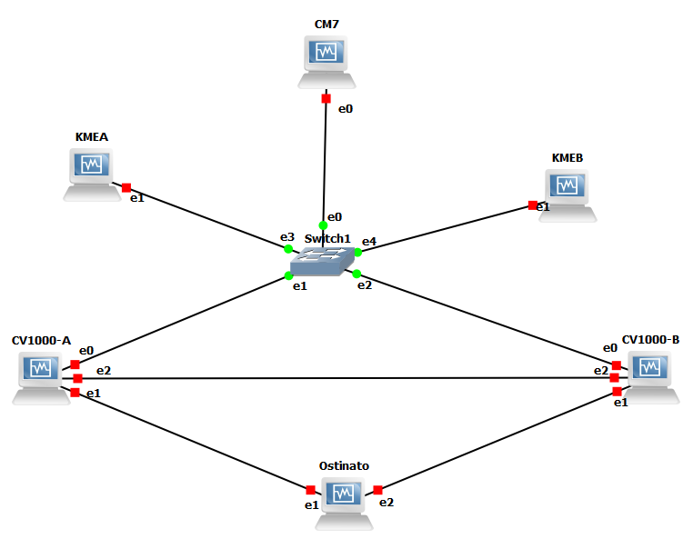
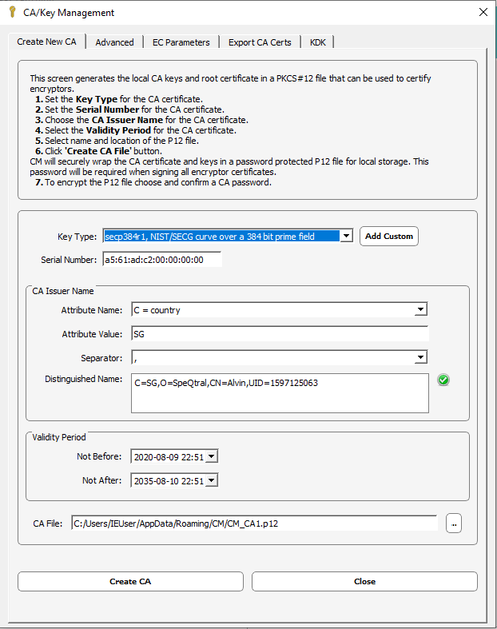
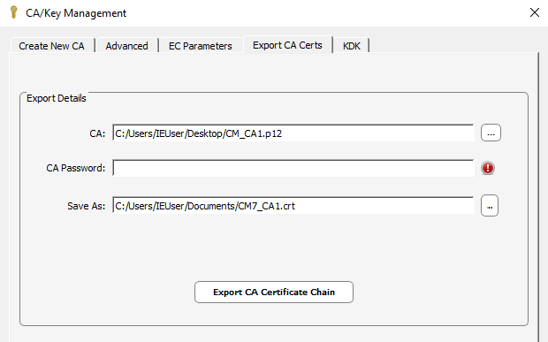
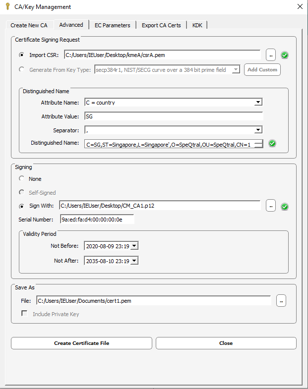
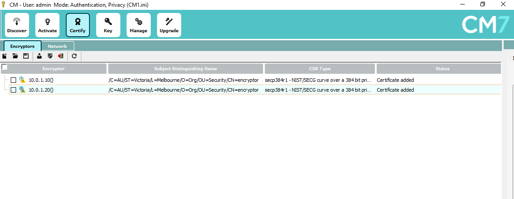
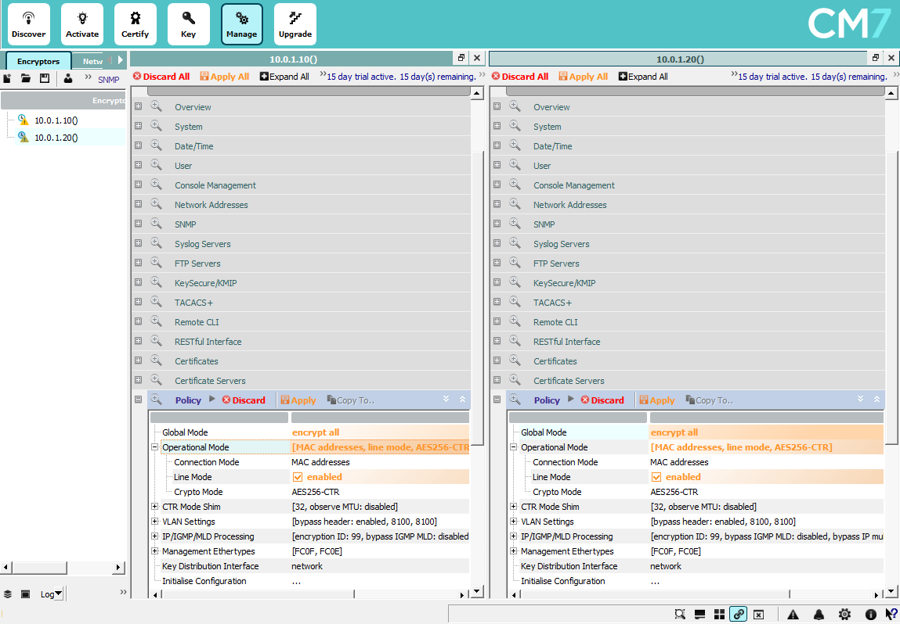
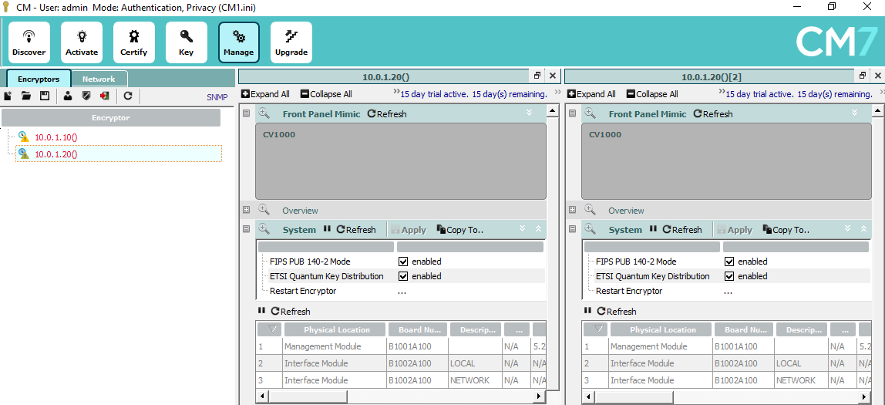
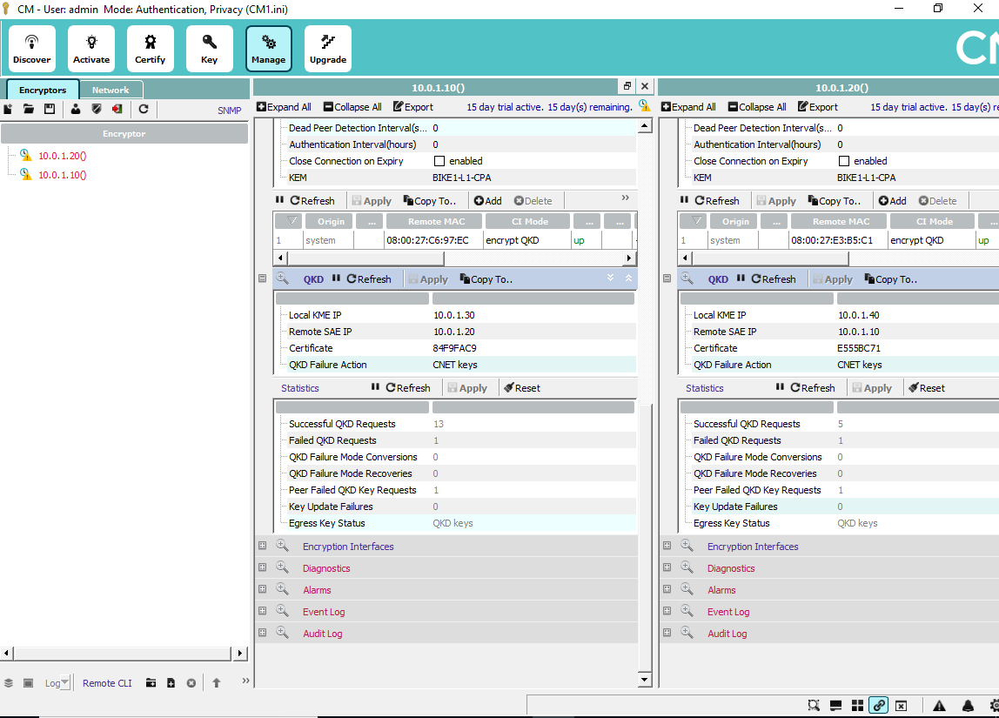

4. Running Senetas VM with API¶
Now we move on to running the API with Senetas’s encryptors. The encryptors are provided in virtual machine (VM) form for testing purposes.
4.1. Familiarize with CV1000 VM¶
The user is encouraged to first familiarize with the VMs and its UI through the setup and lab exercise document provided by Senetas.
All relevant files, such as setup docs and VM images, can be found in the SpeQtral SharePoint folder here.
First, go to Setup_docs to access the basic setup and GNS3 exercise on getting the VMs running. I have written a supplementary document that covers some areas of the original
documents that may be missing or unclear. You will find the necessary VMs (such as the CV1000s and Ostinato) in the VM_images folder. Otherwise, the rest of the software
should be freely available online (eg. GNS3).
4.2. Configure KME for API¶
Now that you are familiar with setting up and operating the VMs, we can proceed to tweak its settings to work with the QKD API. These instructions are based off the notes in the
API_configure folder. However they are self-contained here.
This is what the GNS3 setup looks like.
You can see that on top of what is identical to the lab exercise, I have two VMs attached to the Ethernet switch. These are Ubuntu VMs running the Apache server hosting the APIs.
To get started, first we want to create a new CA in CM7 to certify the encryptors and the Apache servers so that they can communicate via HTTPS (TLS/SSL). Here we shall not use RSA, but rather the Elliptic Curve secp384r1 as below:
Then, you want to export this CA as a .crt under the “Export CA Certs” tab:
The .crt will later be placed in your KME VMs for Apache to verify certificates.
Now proceed to your two VMs hosting the KMEs. You will want to create a new Ethernet interface on each VM under its network settings so they can be wired in GNS3. I will set the IP
of my KME-A to 10.0.1.30 and KME-B to 10.0.1.40. Feel free to use any IP but for simplicity it is best to stick to the same subnet as the encryptors (which I kept as 10.0.1.10
and 10.0.1.20).
On the command line, run the OpenSSL commands (for example on KME A):
$ openssl ecparam -name secp384r1 -genkey -noout -out priv_key_A.key
$ openssl req -new -sha256 -key priv_key_A.key -out csrA.pem
The first line tells OpenSSL to generate a private key according to the secp384r1 protocol, and the second line uses that key to generate a .pem certificate signing request (CSR). Do this for both VMs. Now, transfer the .pem files to the Windows 10 VM hosting CM7. We will use the CA generated earlier to sign these CSRs.
This should generate another .pem file, the certificate for your KMEs. Now transfer this new .pem, along with the .crt earlier to your VMs. The .pem generated from the CSRs should of course go to the same VMs it was generated from (eg. certificate from csrA.pem should go back to KME A).
Assuming you are on Ubuntu, you can place the private key in /etc/ssl/private and the .pem and .crt in /etc/ssl/certs. Then you configure /etc/apache2/sites-available/etsi-qkd-api.conf:

You can find a copy of the file here. Note that the variable WSGIDaemonProcess should point to the Python directory
of your Python virtual environment installation. You will also have to change the path inserted under sys.path.insert in app.wsgi in the etsi-qkd-api project folder to the directory of the project in your system.
With this, set up of the Apache servers are complete.
4.3. Configure CV1000s¶
Next, we certify the encryptors with the CA. Under CSR type, ensure that it is changed from RSA to secp384r1:
Go into the Manage pane and under Policy, enable Line mode and change Global mode to ‘encrypt all’. Let the encryptors restart.
To enable QKD functionality, under System, tick the checkbox for ‘ETSI Quantum Key Distribution’.
Under Certificates, ensure that the correct certificate is selected for each encryptor, especially if you have certified it earlier with the RSA certificate in the lab exercise. One way is to check that the certificate is of Signature Algorithm ecdsa-with-SHA256.
Lastly, under the QKD section, we need to key in the relevant IP addresses. Make sure to match the certificates to the ones in the Certificate tab. A finished setup should look like this:
If you have done the setup correctly, you should see successful QKD requests. There will be a few failed QKD requests, which will be discussed further in the next section.